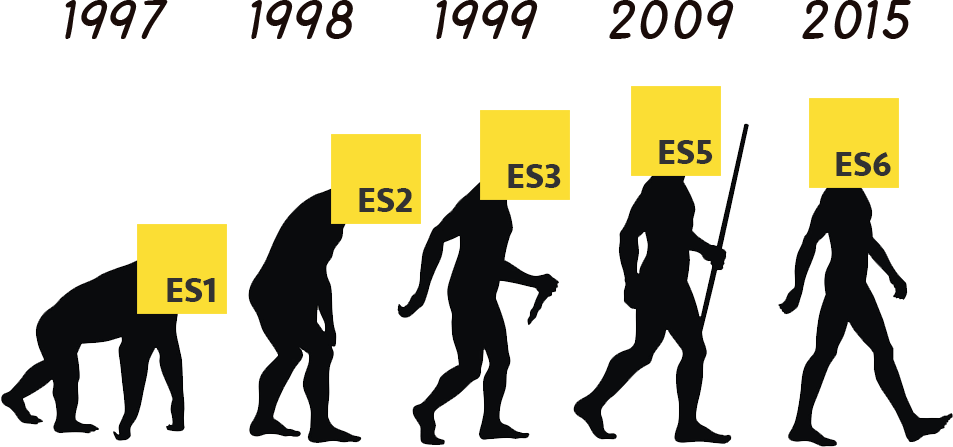

JavaScript se introdujo en 1995 como una forma de agregar programas a páginas web en el navegador Netscape Navigator. En su momento fue una idea novedosa. En los primeros días de la World Wide Web, HTML era bastante simple , y bastante fácil de aprender casi todo lo que se necesitaba saber para agrupar páginas web. Cualquiera podía hacer una Web juntando tablas, texto y añadiendo alguna imagen.
A principios de los años 90, la mayoría de usuarios que se conectaban a Internet lo hacían con módems a una velocidad máxima de 28.8 kbps . Esa velocidad era más que suficiente para la época salvo que quisieras descargar imagenes de cierto tamaño. Lo cierto era que la web en aquel entonces no ofrecía gran cosa más que servir como una inmensa biblioteca donde los usuarios consultaban mayormente contenido basado en texto pero la evolución que conocemos hoy estaba por llegar y podían verse los primeros pasos.
En esa época, empezaban a desarrollarse las primeras aplicaciones web y por tanto, las páginas web comenzaban a incluir formularios complejos. Con unas aplicaciones web cada vez más complejas y una velocidad de navegación tan lenta, surgió la necesidad de un lenguaje de programación que se ejecutara en el navegador del usuario . De esta forma, si el usuario no rellenaba correctamente un formulario, no se le hacía esperar mucho tiempo hasta que el servidor volviera a mostrar el formulario indicando los errores existentes.
Desde entonces, el lenguaje ha sido adoptado por todos los demás navegadores gráficos principales. Ha hecho posibles las aplicaciones web modernas, aplicaciones con las que puede interactuar directamente sin hacer una recarga de página para cada acción.
En la actualidad los navegadores web no son las únicas plataformas en las que se utiliza JavaScript. También es posible ejecutar código JavaScript en un entorno servidor . De hecho las bases de datos, como MongoDB y CouchDB, usan JavaScript como su lenguaje de scripting y consulta. Varias plataformas para la programación de escritorio y servidor, en particular el proyecto Node.js proporcionan un entorno para la programación de JavaScript fuera del navegador .
Antes de continuar hay que aclarar que aunque se parecen JavaScript no tiene nada que ver con el lenguaje de programación llamado Java. El nombre en realidad viene por una cuestión más de marketing. Cuando se introdujo JavaScript, el lenguaje Java se estaba comercializando en gran medida y estaba ganando popularidad. Alguien pensó que era una buena idea tratar de avanzar en esto y hasta nuestros días. :)
Aunque JavaScript surgió como un lenguaje de script para mejorar las capacidades de la web de la época allá por 1995 por la extinta Netscape, JavaScript no ha dejado de evolucionar desde entonces. Originalmente el lenguaje se basaba a su vez basaba en CEnvi desarrollado a su vez por Nombas.
Brendan Eich, un programador que trabajaba en Netscape, pensó que podría solucionar las limitaciones de la web de entonces, adaptando otras tecnologías existentes (como ScriptEase) al navegador Netscape Navigator 2.0, que iba a lanzarse en aquel año. Inicialmente, Eich denominó a su lenguaje LiveScript y fue un éxito.
Fue entonces cuando, justo antes del lanzamiento, Netscape decidió cambiar el nombre por el de JavaScript y firmó una alianza con Sun Microsystems para continuar el desarrollo del nuevo lenguaje de programación.
Microsoft, al ver el movimiento de uno de sus principales competidores, también decidió incorporar u propia implementación de este lenguaje, llamada JScript, en la versión 3 de su navegador Internet Explorer.
Esto contribuyó todavía más al empuje y popularización del lenguaje, pero comenzaron a presentarse pequeños problemas por las diferencias entre implementaciones. Por lo que se decidió estandarizar ambas mediante la versión JavaScript 1.1 como propuesta a ECMA, que culminó con el estándar ECMA-262. Este estándar dicta la base del lenguaje ECMAScript a través de su sintaxis, tipos, sentencias, palabras clave y reservadas, operadores y objetos, y sobre la cual se pueden construir distintas implementaciones. La versión JavaScript 1.3 fue la primera implementación completa del estándar ECMAScript.
JavaScript fue ideado para dotar a la web de capacidades interactivas que le ayudarán a dar el salto al siguiente nivel permitiendo crear una interfaz de usuario activa, lo que ofrece retroalimentación a los visitantes según navegan por sus páginas. Por ejemplo, es común usar JavaScript en la validación de formularios para asegurarnos que la información introducida es válida. Sin necesidad de enviar ninguna información al servidor, el programa realiza los cálculos necesarios ahorrando tiempo y recursos del lado del servidor.
Con JavaScript podemos crear sobre la marcha páginas HTML personalizadas, dependiendo de las acciones ejecutadas por el usuario. Supongamos que estamos en una web de seguros, con JavaScript podemos realizar consultas en el servidor sin necesidad de recargar la página, mostrar opciones personalizadas, etc y lanzar eventos en función del día y hora en donde nos encontremos.